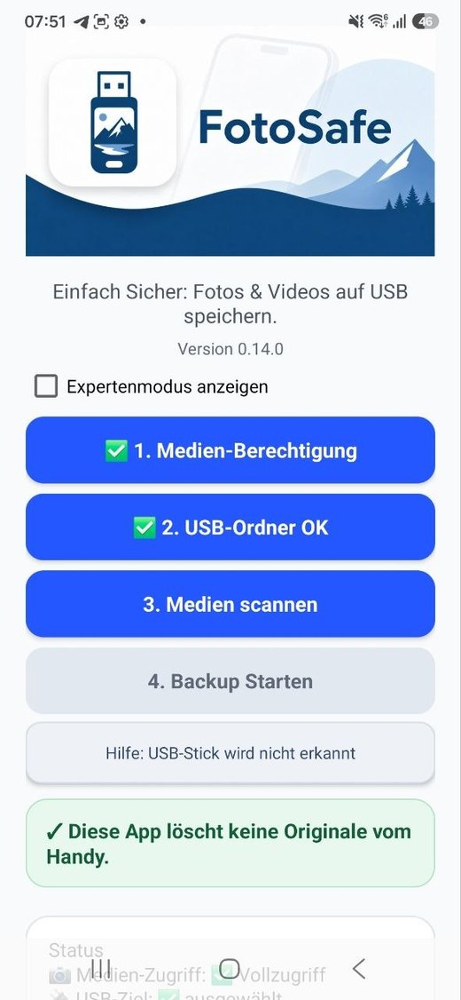
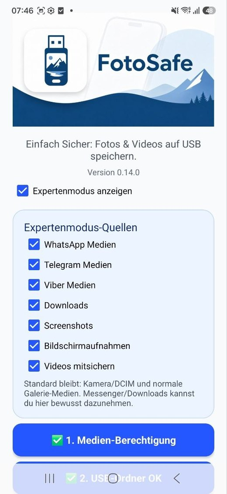
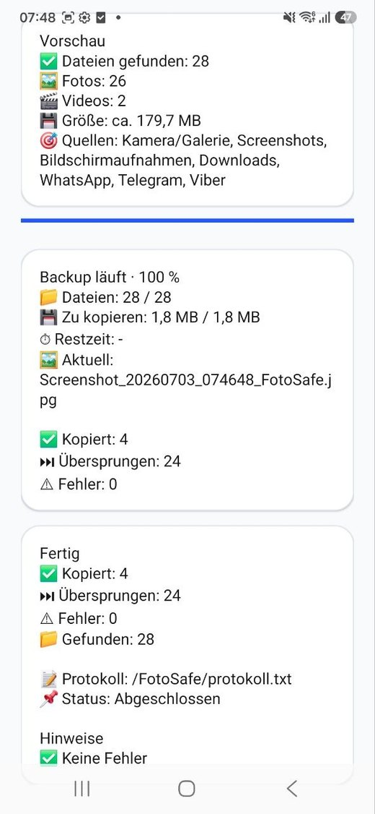

USB
Lokales Backup
Fotos und Videos werden auf ein vom Nutzer gewähltes USB-/Speicherziel kopiert.
FotoSafe führt Schritt für Schritt durch ein lokales Android-Backup auf USB-Stick oder Speicherordner — ohne Cloud, ohne Konto und ohne Löschen der Originale.
Noch nicht öffentlich im Play Store: Google-Developer-Verifizierung läuft, Closed Test wird vorbereitet.

Eine einfache Zusatzsicherung für Menschen, die ihre Erinnerungen nicht nur in der Cloud haben wollen.
Fotos und Videos werden auf ein vom Nutzer gewähltes USB-/Speicherziel kopiert.
FotoSafe kopiert nur. Es werden keine Originaldateien vom Handy gelöscht.
Bereits gesicherte Dateien werden übersprungen. Ein zweiter Lauf ist dadurch schneller.
Aufgenommen auf einem Samsung S23: einfacher Start, Expertenmodus und fertiges Backup-Ergebnis.
Geführter Start mit USB-Ordner und Hinweis: Originale bleiben am Handy.

Expertenmodus für WhatsApp, Telegram, Downloads, Screenshots und Videos.

Klare Zusammenfassung: gefunden, kopiert, übersprungen, Fehler und Protokoll.
Kein Cloud-Upload, kein Benutzerkonto, keine Werbung, kein Tracking und aktuell keine Analytics-/Crash-SDKs.
Privacy Policy, Data Safety, Photo/Video Permission Declaration, Foreground-Service-Declaration und DE/EN Store-Assets sind vorbereitet.
| App | FotoSafe |
|---|---|
| Paketname | at.weidi.fotobackup |
| Version | 0.14.0 / Version Code 27 |
| Plattform | Android 9+ / Kotlin / native Android |
| Support | fotosafe.app@gmail.com |
| Tests | Galaxy S8+, Note 20 Ultra, Honor 600 Pro, Samsung S23 Deutsch/Englisch v14 OK |
| Play-Status | Wartet auf Google Developer Verifizierung |
FotoSafe muss Fotos und Videos lokal lesen können, um sie auf das gewählte Ziel zu kopieren.
Android verlangt externen Speicher über den System-Dateidialog. FotoSafe schreibt danach in /FotoSafe/.
Nein. Die Sicherung läuft lokal auf dem Gerät und dem gewählten Speicherziel.
Android kann lange Hintergrundvorgänge begrenzen. Bereits kopierte Dateien bleiben erhalten und werden beim nächsten Lauf übersprungen.
Ein Backup kann unvollständig bleiben, wenn Akku, Gerät, Android, Kabel, Adapter oder USB-Stick während der Sicherung ausfallen. Bitte Handy ausreichend laden, USB-Stick nicht abziehen und das Ergebnis prüfen.
FotoSafe ist eine zusätzliche Sicherung. Bitte behalte wichtige Fotos auch an anderer Stelle und lösche Originale erst, wenn du die Kopien am USB-Stick geprüft hast.